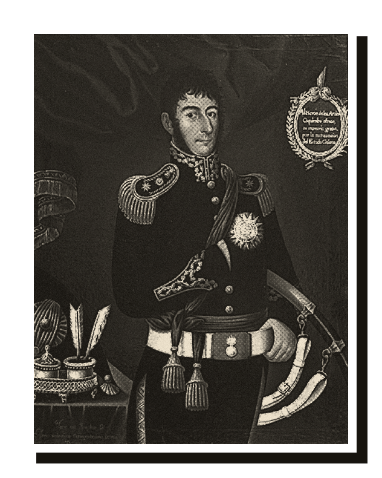

1,69

Retrato: J.-L. David, 1812 · dominio público
TOULON

Batalla 1 · Sitio
Toulon, Francia
Sep–Dic 1793
Sep–Dic 1793
Pintura: É. Detaille · dominio público
Toulon · 1793 · esquema
VER EL TERRENO
Batalla 2 · Italia
Abril 1796
Esquema
Esquema
DIVIDIR
La gran idea
Cuerpo de ejército
● infantería ▲ caballería ■ artillería
● infantería ▲ caballería ■ artillería
Batalla 3 · Ulm
Octubre 1805
Esquema
Esquema
RODEAR
Batalla 4 · Austerlitz
2 · 12 · 1805
Esquema
Esquema
ENGAÑAR
ANÁLISIS
1815

Waterloo, Bélgica
18 · 06 · 1815
Pintura: W. Sadler · dominio público
KRIEG

Vom Kriege
DE LA GUERRA · 1832
DIJO
Retrato: W. Wach · dominio público

ANÁLISIS
Retrato: J. Gil de Castro, 1818 · dominio público
TRAMA
FUENTES EN LA DESCRIPCIÓN